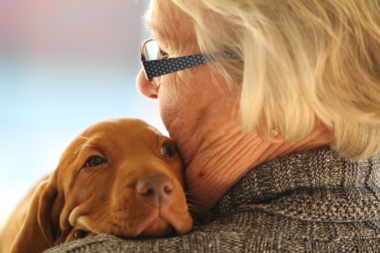
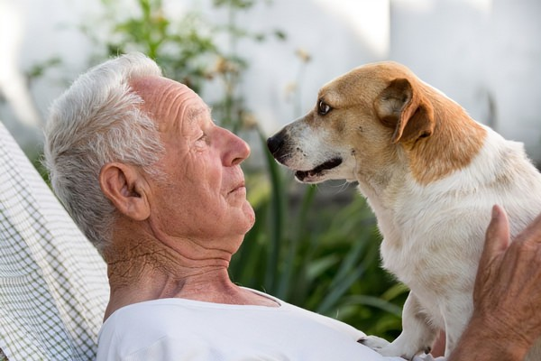
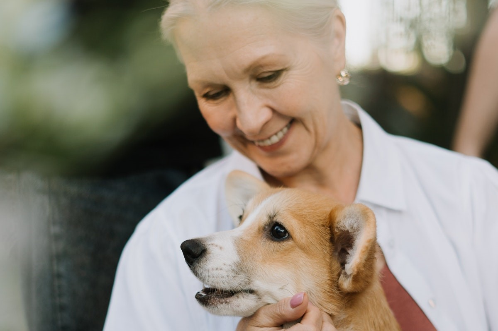

Happy dogs
happy owners
♡ ♡ ♡
Local volunteer support group for our Knocklyon seniors and their dogs
- WALKIES - Knocklyon is a registered charity.
- We are a local group of volunteers dog lovers ready to help our senior neighbours of
Knocklyon with their dog walking needs.
- We can walk your dog daily if you are a senior citizen and are housebound or feel like you
no longer have the stamina to take you dog on long walks, especially during the winter
months.
- We understand how important it is to keep your four legged friend at home with you and how
much love and companionship dogs can provide.
- Here at Walkies, we also aim to provide tailored services so please don't hesitate to get in
touch if you have other needs like short-term fostering for your dog during hospital stays.
- We're here to help you and your dog - please register here!
- Dogs can help reduce stress, lower blood pressure, and increase social interaction and physical activity.
- Dogs' love relieves feelings of loneliness.
- Dogs help us stay present and give loving companionship.
- Studies show that dog owners exhibit higher degrees of self-discipline than those without.
- Dogs help you stay safe and independent. They provide ears for the deaf, eyes for the blind and an early warning system at the approach of dangers.
- Sheer hugability!


